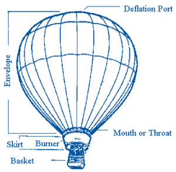

Hot Air Ballooning
Hot air ballooning is a fun and amazing sport. Many fly for fun, some pilots fly for personal business giving rides and such. Some pilots fly for filming crews because the smoothness of flight makes an smooth and steady platform for the filming process.
Balloon Anatomy

The main parts of a hot air balloon include: the Basket, Envelope and Burner System.
Other items that are also important include: skirt, mouth, deflation port,
drop line, and rip line.
Other useful equipment might include: hauling trailer, basket cover, safety
helments, radios, and snacks! Please keep in mind that special insurance is also needed
for hot air balloon pilots. It is considered a high risk activity and there are only
a few companies in the US that will actually offer insurance for hot air balloons and
ballooing activities.